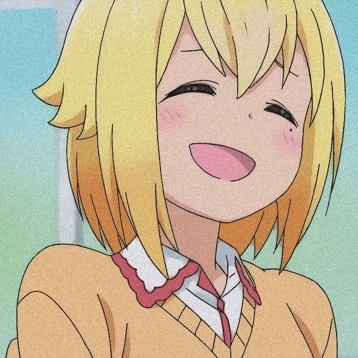
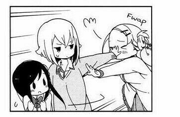
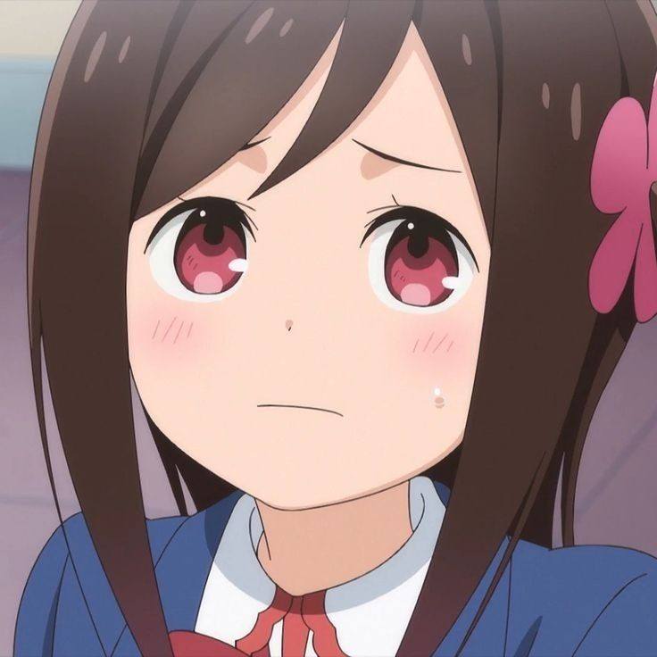
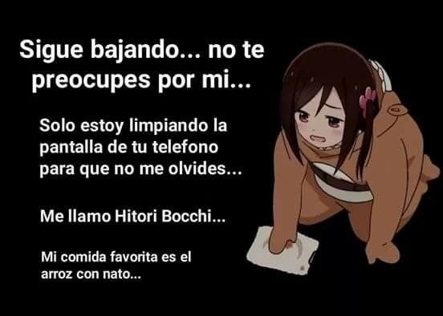
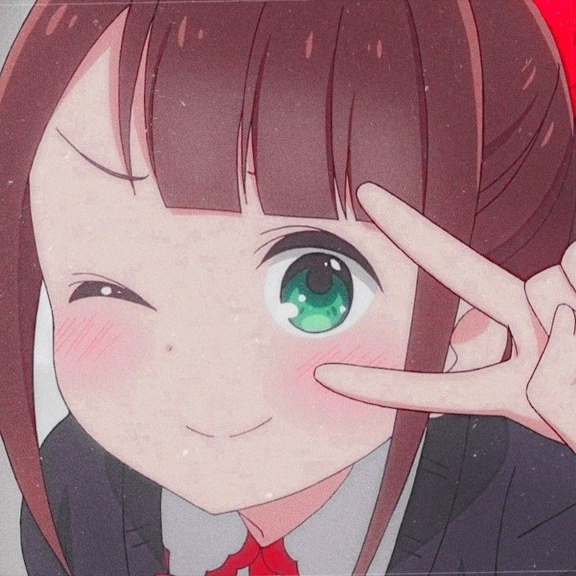
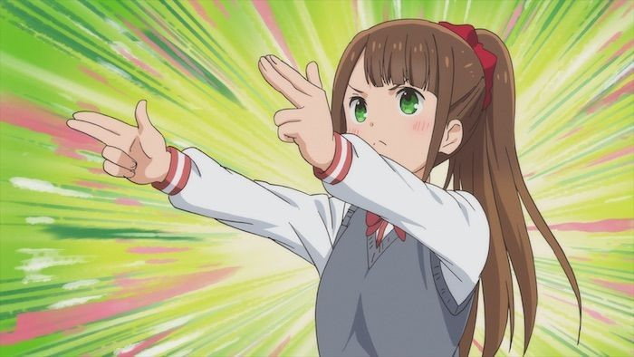
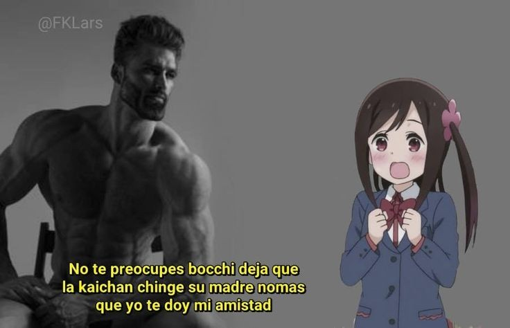
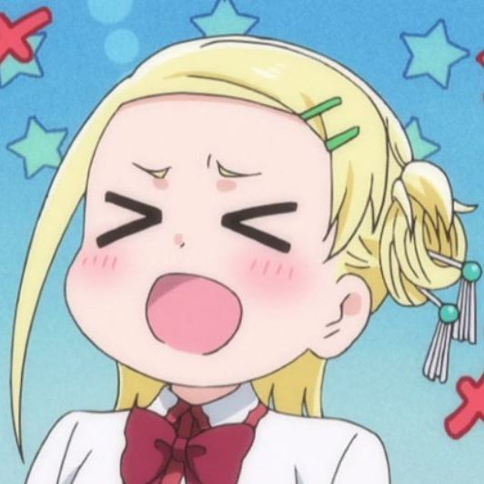
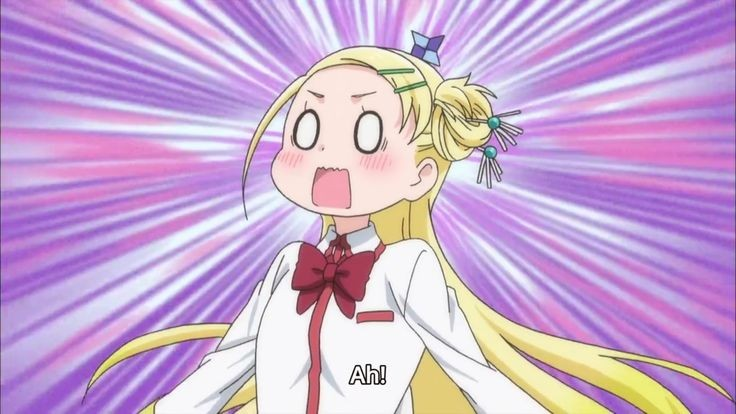

 Sunao Nako
@Delincuente_supremo777
Oye @Sotoka, deja de cargar a Bocchi, que luego le da sus desmayos repentinos èwé. Ya se que quieres que ella sea tu Sensei, pero mira, un Alumno con su Sensei debe mantener cierta distancia de respeto...

 Hitori Bocchi(Admin)
@Bocchi_superfuerte
No te preocupes por este Post, sigue bajando, solo me quedare aqui a limpiar tu pantallita, pero... No lo olvides, Me llamo Hitori Bocchi. Y mi comida Favorita es el arroz con Nato.

 Honshou Aru
@Aru_OwO
BEAAMMM!~~ Aqui tienes!~ Rayo del Esfuerzo!~ No olvides de siempre dar lo mejor de ti!~
PSDT: Ya Proximamente saldra el Album de Maker na Aru, Kagayake Aru!~

Sunao Nako
@Delincuente_supremo777
pq? Kei-Chan pq? Bocchi yo te dare siempre mi amistad, no te preocupes por el resto~

 Sotoka Rakita
@Shinobi_Oculta_del_WaHaHa
Ohhhh~ Esa fue un Lanzamiento de Shuriken Maravilloso de parte de mi Sensei @Hitori Bocchi, era de esperarse de un verdadero Ninja, de seguro ahde debe ser una Gerrera descomunalmente fuerte!~ Algun dia me gustaria llegar a ser igual de Fuerte que mi Sensei!~ nwn
